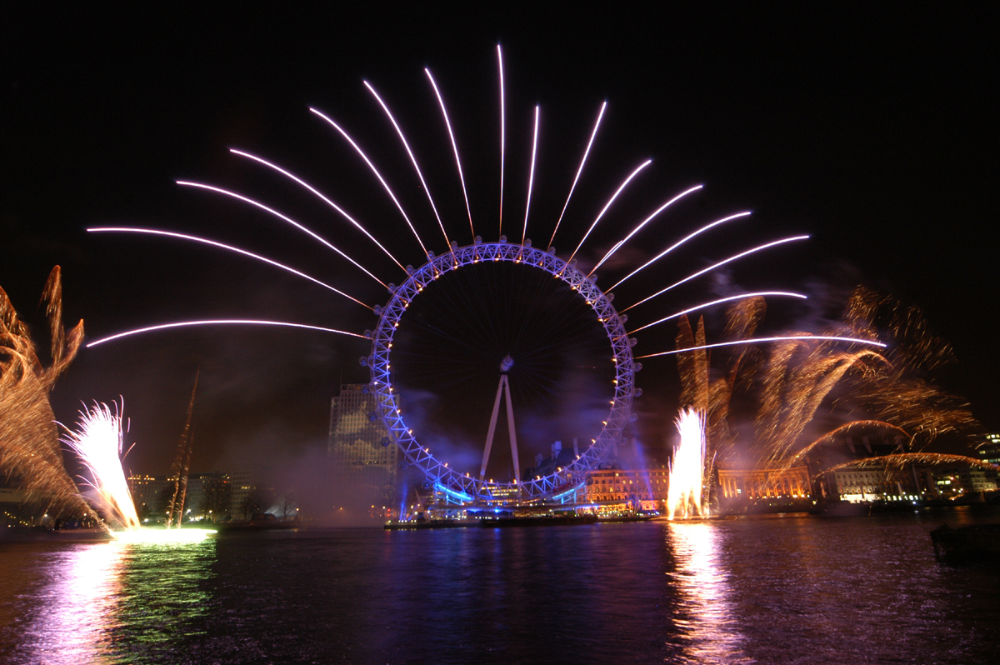

O atractie oarecum recenta dar extrem de populara, London Eye este o roata gigantica situata pe malul sudic al Tamisei. Structura cu o inaltime de 135 de metri a fost construita ca parte a eforturilor de celebrare ale noului mileniu in capitala Marii Britanii.
Structura a fost proiectata de echipa de arhitecti formata din David Marks si Julia Barfield, sot si sotie. Acestia si-au inaintat propunerea de a construi o roata panoramica ca parte a unui concurs pe tema noului mileniu.
Nici unul dintre proiectele participante la competitie nu a fost declarat castigator, dar cuplul de arhitecti nu s-a dat batut si in cele din urma au reusit sa obtina sustinere de la British Airways, compania aeriana fiind cea care a finantat proiectul.
Constructia giganticei roti din Londra a durat mai mult de un an si jumatate. In acest proces de durata s-au folsit peste 1700 de tone de otel si peste 3000 de tone de beton au fost folosite pentru fundatie. In capsulele cu un aer futurist pot incapea pana la 25 de persoane, aceste capsule fiind aduse cu trenul prin tunelul de sub Canalul Manecii tocmai din Franta. Fiecare capsula are o lungime de 8 metri si cantaresete 500 de kilograme. Axul lung de 25 de metri a fost construit in Republica Ceha. Cercul rotii are un diametru de 122 de metri si exista 80 de spite care il unesc de axul central.
Roata din Londra se invarte foarte incet, permitand turistilor sa se imbarce fara a fi oprita complet. O tura completa dureaza aproximativ 30 de minute. Datorita design-ului deosebit al capsulelor din sticla, vizitatorii au parte o priveliste de 360 de grade a intregii capitale britanice. Multe dintre obiectivele turistice celebre din Londra sunt perfect vizibile, inclusiv, Palatul Buckingham, Catedrala St Paul si Casele Parlamentului. In zilele senine se poate vedea pana la 40 de kilometri distanta.
Ca informatie practica va sfatuim daca aveti posibilitatea sa va achizitionati biletele in avans, deoarece cozile pot fi foarte lungi, atat la imbarcare cat si la achizitionarea biletelor. De asemenea, este bine de stiut ca noaptea este mai putin aglomerat si privelistile sunt chiar mai spectaculoase.